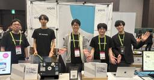

Wantedly Engineer Blog
https://www.wantedly.com/stories/s/wantedly_engineers
Wantedlyのエンジニアによる、テックブログです。開発者向け技術情報を中心に発信しています。「シゴトでココロオドル人をふやす」というミッションを掲げ、ビジネスSNS Wantedly （ウォンテッドリー）を展開しています。
フィード

正解がひとつではないシナリオで、LLMが生成する文章の品質をどのように担保したか
Wantedly Engineer Blog
ウォンテッドリーでバックエンドエンジニアをしている冨永(@kou_tominaga)です。AI 転職エージェントア...
1日前

RecSys 2026 参加レポート: RecSys in HR ワークショップで研究成果を発表しました
Wantedly Engineer Blog
こんにちは。 ウォンテッドリーの推薦チームで機械学習エンジニアをしている右手です。2026 年 9 月 28 日か...
2日前

Kaigi on Rails 2026 参加レポート
Wantedly Engineer Blog
こんにちは、ウォンテッドリーでバックエンドエンジニアをしている林です。2026年10月16日（金）〜17日（土）に...
2日前

Amazon Bedrock をプロダクトで本番運用するために (利用上限編)
Wantedly Engineer Blog
ウォンテッドリーで Infra Squad としてインフラエンジニアをしている @fohte です。ウォンテッドリ...
8日前
Agent LoopとWorkflowを使い分け、不確実性を抑えたAI機能を実現する
Wantedly Engineer Blog
こんにちは。ウォンテッドリーでバックエンドエンジニアをしている小室(@nekorush14)です。2026年9月2...
9日前
新アプリ Mendy のアーキテクチャと技術選定
Wantedly Engineer Blog
こんにちは、ウォンテッドリーで Visit AI Squad のリーダーと、Mendy のプロジェクトリードをして...
10日前
AIが何でも書ける時代に、新卒エンジニアはどう学ぶか
Wantedly Engineer Blog
こんにちは。2026年6月にウォンテッドリーへ新卒で入社し、iOSエンジニアとして働いている乙津(@rotsu1)...
11日前
ウォンテッドリーはKaigi on Rails 2026に協賛し、スポンサーセッションに登壇します
Wantedly Engineer Blog
こんにちは。ウォンテッドリーでバックエンドエンジニアをしている小室 (@nekorush14) です。ウォンテッド...
11日前
QAがAIでE2Eを書いてみて学んだこと ー 「テストが動く」ことと「テストを正しくつくる」ことは別だった
Wantedly Engineer Blog
はじめにこんにちは、QAエンジニアの青柳です。今回は、Wantedly Hire (採用管理システム) のE2Eテ...
23日前
ウォンテッドリーによるiOSDC Japan 2026参加レポート
Wantedly Engineer Blog
こんにちは！ウォンテッドリーでiOSエンジニアをしている湊 航太です。2026年9月11日〜13日に開催されたiO...
1ヶ月前
ウォンテッドリーはiOSDC Japan 2026に協賛し、スポンサーセッションに登壇します
Wantedly Engineer Blog
みなさんこんにちは！ウォンテッドリー株式会社で iOS エンジニアをしています湊 航太（@kota_minato7...
1ヶ月前
DroidKaigi 2026参加レポート 〜 まだ知らないことが、こんなにある
Wantedly Engineer Blog
こんにちは！Wantedly Visit Client Growth / Mobile Chapterの朴（パク）...
1ヶ月前
「AIに任せる」を決めるのではなく、問い続ける ─ QAチームのAI活用アップデート
Wantedly Engineer Blog
はじめにこんにちは、QAエンジニアの青柳です。ウォンテッドリーの全プロダクトを横断して支えるQAチームでは、Cla...
2ヶ月前
AI-DLCをチーム開発に適用しようとしている話
Wantedly Engineer Blog
こんにちは。ウォンテッドリーでバックエンドエンジニアをしている小室 (@nekorush14) です。2026年8...
2ヶ月前
賢くAIを使うためにウォンテッドリーが取り組んでいる可視化と分析の方法
Wantedly Engineer Blog
はじめに先日 AI Ops Squad として全社を対象に進めてきた AI 活用の取り組みを紹介しました。半年をか...
2ヶ月前